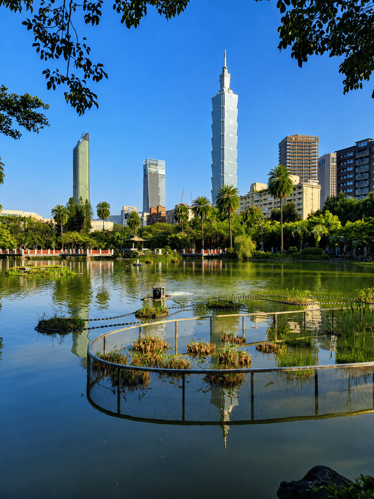
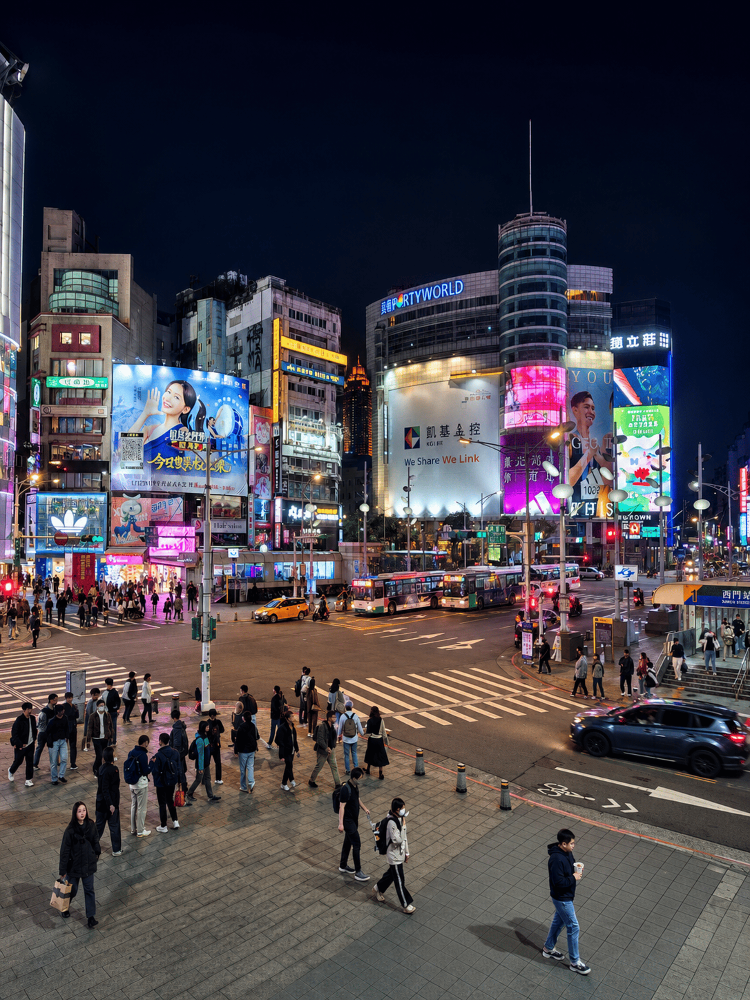
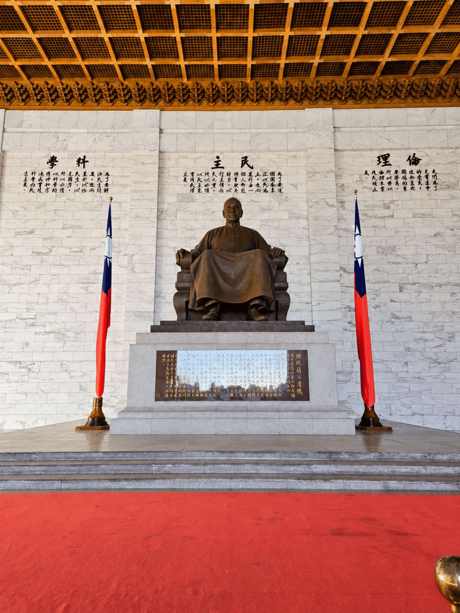

%20(1).png)




About this activity
Highlights
- Marvel at Taipei 101’s design, explore its mall, with optional observatory
- Explore Chiang Kai-shek Memorial Hall and Liberty Square
- Walk to Ximending via 228 Peace Memorial Park and Presidential Office Building
- Discover Ximending’s shops, fashion, and street food
- Visit Longshan Temple and its unique religious traditions
Full Description
Begin your tour with a visit to Taipei 101, an engineering marvel that dominates the city skyline. You will explore its exterior, admiring its bamboo-inspired design, and have time for photos. You will also visit its shopping mall, where you can explore a variety of stores and dining options. If you wish, you may choose to visit the observatory (optional) for stunning panoramic views.
Continue to the Chiang Kai-shek Memorial Hall, a grand symbol of the island's political history. Be captivated by its majestic blue-and-white architecture, framed by the elegant National Theater and Concert Hall buildings within the vast Liberty Square.
From there, you will walk toward Ximending, passing through the 228 Peace Memorial Park and in front of the Presidential Office Building, two key landmarks rich in history. Upon arrival, immerse yourself in the vibrant energy of Ximending, often referred to as the “Harajuku of Taipei”. This district is the epicenter of pop culture, fashion, and world-class street food. Stroll through its neon-lit pedestrian streets and discover why it is a favorite hangout spot for local youth.
Finally, visit Longshan Temple, one of the oldest and most iconic temples in Taipei. Observe its intricate stone carvings, breathe in the scent of incense, and learn about the unique religious traditions that blend Buddhism and Taoism, along with elements of traditional Chinese folk beliefs.
Itinerary
For reference only. Itineraries are subject to change.
Includes
- Professional trilingual guide
- Metro (MRT) transportation
- Guided visit to Taipei 101 exterior
- Historical tour of CKS Memorial Hall
- Guided walk through Ximending
- Guided visit to Longshan Temple
Not Included
- Taipei 101 Observatory tickets
- Food and drinks
- Personal expenses & shopping
- Gratuities (optional)
- Hotel pickup and drop-off
Meeting Point & Important Info
Meeting Point
We will meet outside Taipei 101, right next to the iconic red "LOVE" sculpture, located at the intersection of Xinyi Road and Songzhi Road. This open area is easy to locate and is just a short walk from Exit 4 of the Taipei 101/World Trade Center MRT station. Your guide will contact you via WhatsApp or Line to coordinate the meeting before the start time.
Open in Google MapsWhat to bring
- Comfortable clothes
- Comfortable shoes
- A small umbrella in case of rain
Know before you go
- The tour begins at Taipei 101 and ends at Longshan Temple.
- This half-day walking tour requires a moderate level of physical fitness.
- MRT fares during the tour are included in the price.